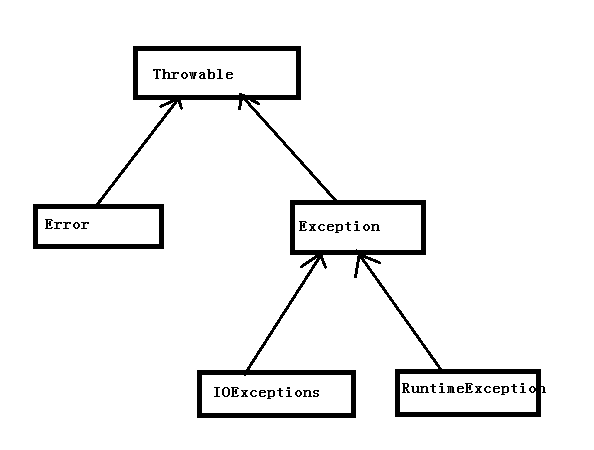

异常是程序中的一些错误，但并不是所有的错误都是异常，并且错误有时候是可以避免的。
比如说，你的代码少了一个分号，那么运行出来结果是提示是错误 java.lang.Error；如果你用System.out.println(11/0)，那么你是因为你用0做了除数，会抛出 java.lang.ArithmeticException 的异常。
Java中的异常主要分为下列几类:
- 检查性异常：最具代表的检查性异常是用户错误或问题引起的异常，这是程序员无法预见的。例如要打开一个不存在文件时，一个异常就发生了，这些异常在编译时不能被简单地忽略。
- 运行时异常： 运行时异常是可能被程序员避免的异常。与检查性异常相反，运行时异常可以在编译时被忽略。
- 错误： 错误不是异常，而是脱离程序员控制的问题。错误在代码中通常被忽略。例如，当栈溢出时，一个错误就发生了，它们在编译也检查不到的。
所有的异常类是从 java.lang.Exception 类继承的子类。 Exception 类是 Throwable 类的子类。除了Exception类外，Throwable还有一个子类Error 。它们之间的关系入下图:

从Exception继承的类都是异常，异常可以被处理，处理完后程序仍然可以继续运行。从Error继承来的类都是错误，在运行时错误无法被处理，只能修改代码逻辑。从Runtime中继承的类都是运行时异常，这类异常在程序中可以处理，也可以不处理。而非运行时异常在代码中必须处理。不然编译会报错。
Java中异常处理的方式
Java中的异常处理主要有下列几种:
- 使用
throw在指定方法中抛出指定异常。比如throw IOException();在方法中抛出了一个IO异常 - 使用
throws将异常抛出给调用者处理。在函数声明时使用。方法声明时可以抛出多个异常，如果多个异常有继承关系，那么只需要抛出父类异常即可。如果父类的方法没有抛出异常，子类在重写父类方法时也不能使用这种方式抛出异常 try...catch处理异常。
在使用try 处理异常时需要注意:
- 如果catch 中捕获的有多个异常，且异常间有继承关系，那么必须把子类写在前面，父类在后面
异常中的常用方法
Throwable 中定义了3个异常处理的方法:
String getMessage(): 返回异常的详细信息String toString(): 返回异常的简短信息void printStackTrace(): 打印异常的调用信息
这些异常信息一般在try…catch 中使用，例如
1 | try |
finally 关键字
无论异常是否发生，finally中的代码都会执行。一般finally中编写释放资源的代码，比如释放文件对象。需要注意的是，finally中会改变return的执行顺序，不管return在哪，都会最后执行finally中的return
1 | try{ |
自定义异常类
自定义异常时需要注意：
- 异常类都必须继承自
Throwable类，如果要定义检查性异常，需要继承Exception,要定义运行时异常，需要继承RuntimeException。
1 | class MyException extends Exception{ |
假设我们定义一个异常类，表示取钱的异常，当取钱数少于1000时报异常，提示用户去ATM取，可以这样写
1 | class TooLittleMoneyException extends Exception |